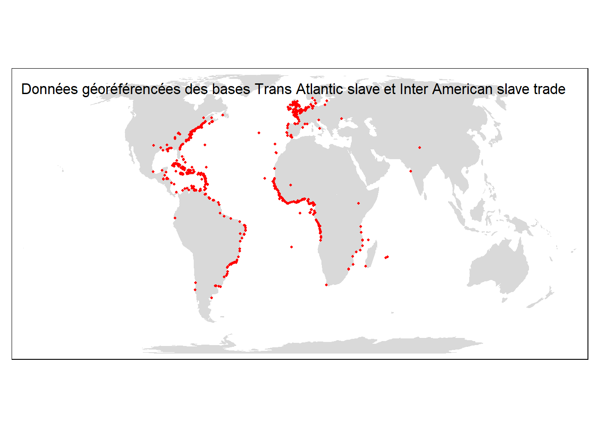
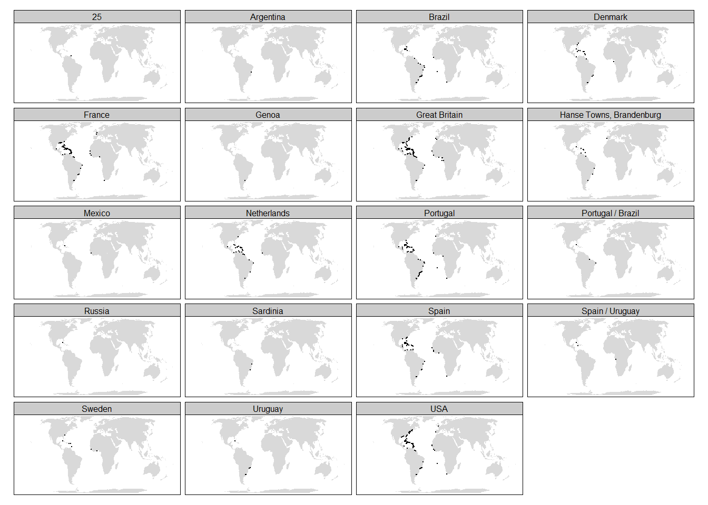

Chapitre5 Cartographie
5.1 Préalables
5.1.1 Packages
Vous aurez besoin en outre du tidyverse des packages suivants :
- readxl : lecture des feuilles de calcul au format xlsx.
- sf : package de référence pour le données géospatiale.
- tmap : package de cartographie.
5.1.2 Importation des données
5.1.2.1 Fond de carte statique rattaché au package tmap
Tmap possède un fond de carte statique que l’on peut activer avec la commande suivante :
5.1.2.2 Données géoréférencées des bases Trans Atlantic slave et Inter American slave trade
Les données non publiées sur lesite slavevoyages.org mais disponibles à l’adresse, sont stockées dans une feuille de calcul au format xlsx. Elle sont lues par la fonction read_excel du package readxl et mises en qualité par une conversion au format numérique des coordonnées en longitude et latitude, la suppression des lieux non géoréférencés et des lieux géoréférencés 0.0, 0.0.
geocode <- read_excel("stdb-geocode-19vcariou2.xlsx")
geocode <- geocode %>%
mutate(x = as.numeric(x)) %>%
mutate(y = as.numeric(y)) %>%
drop_na(x,y) %>%
filter(! x ==0) ## Warning: NAs introduits lors de la conversion automatique
## Warning: NAs introduits lors de la conversion automatique5.1.3 Références
Muenchow, Robin Lovelace, Jakub Nowosad, Jannes. Chapter 8 Making maps with R | Geocomputation with R. Consulté le 5 avril 2020. https://geocompr.robinlovelace.net/.
5.2 Lieux de la traite
Le tableau de données geocodeest transformé en objet géospatial de classe “sf”. Les colonnes correspondants aux coordonnées en longitude et latitude sont précisées. Le système de coordonnées de référence (crs=4326) est indiqué. Le tableau spatial est appelé geocode_sppour le distinguer du tableau non spatial appelé geocode
5.2.1 tmap
Comme ggplot2 , tmap est basé sur l’idée d’une «grammaire des graphiques». Cela implique une séparation entre les données d’entrée et la symbologie. Le bloc de construction de base est tm_shape()qui définit les données d’entrée, suivi par un ou plusieurs éléments de couche tels que tm_fill()et tm_dots(). Cette superposition est illustrée dans le bloc de code ci-dessous.
Il s’agit d’une approche intuitive de la création de cartes: la tâche courante d’ajout de nouvelles couches est effectuée par l’opérateur d’addition +, suivi de tm_*(). L’astérisque (*) fait référence à un large éventail de types de calques.
5.2.2 carte statique
map1s <- tm_shape(World) + # s pour statique
tm_fill() +
tm_shape(geocode_sp) +
tm_dots(col = "red", size=0.04) +
tm_layout(title = "Données géoréférencées des bases Trans Atlantic slave et Inter American slave trade")
tmap_mode("plot") ## tmap mode set to plotting
La carte peut-être ensuite sauvegardée par tmap_save(map1s, "traite1.png", width=1920, height=1080).
5.2.3 carte interactive
Une caractéristique unique de tmap est sa capacité à créer des cartes statiques et interactives en utilisant le même code. Les cartes peuvent être consultées de manière interactive à tout moment à l’aide de la commande tmap_mode("view")
L’interactivité s’effectue à l’aide de la bibliothèque Javascript Leaflet qui offre la possibilité de zoomer sur n’importe quelle partie d’un jeu de données superposé à des carte Web tuilées (trois fonds de carte disponibles par défaut) et d’afficher des étiquettes.
map1i <- tm_shape(geocode_sp)+ # i pour interactive
tm_dots(col = "red", size=0.04) +
tm_layout(title = "Données géoréférencées des bases Trans Atlantic slave et Inter American slave trade")
tmap_mode("view") ## tmap mode set to interactive viewing5.3 Cartes basées sur un filtrage
5.3.1 Exemple de localisation des ports négriers
Vous aller sélectionner la liste des ports avec la fonction distinct et sotcker cette liste dans un objet appelé ports.
Vous devez ensuite effectuer une jointure interne entre les tables ports et geocode. Seules les lignes de la table geocode dont les noms de lieux (place_namecorrespondent au noms des ports ptdepimp) sont alors conservés dans le résultat retourné. Les colonnes des deux tables sont juxtaposées
Il reste a transformer le tableau résultant de la jointure en objet spatial
map_portsi <- tm_shape(ports_geocode_sp)+
tm_dots(col = "red", size=0.04) +
tm_layout(title = "Ports de départ des expéditions de traite atlantique")
tmap_mode("view") ## tmap mode set to interactive viewing5.4 Carte des Lieux d’achat des esclaves pour Nantes
Vous aller sélectionner la liste des ports avec la fonction distinct.
Vous devez ensuite réaliser une jointure interne entre les tableaux ports et geocode. Seules les lignes de la table geocode dont les noms de lieux (place_namecorrespondent au noms des ports ptdepimp) sont alors conservés dans le résultat retourné.
Il reste a transformer le tableau résultant de la jointure en objet spatial
## tmap mode set to interactive viewing5.4.1 Carte comparative des lieux de vente en fonction pavillons
Vous devez ensuite réaliser une jointure interne entre les tableaux ports et geocode. Seules les lignes de la table geocode dont les noms de lieux (place_namecorrespondent au noms des ports ptdepimp) sont alors conservés dans le résultat retourné.
Il reste a transformer le tableau résultant de la jointure en objet spatial
national_s <- tm_shape(World) + # s pour statique
tm_fill() +
tm_shape(national_vente_geocode_sp)+
tm_dots(size=0.02) +
tm_facets(by = "national", as.layers =TRUE)
tmap_mode("plot") ## tmap mode set to plotting